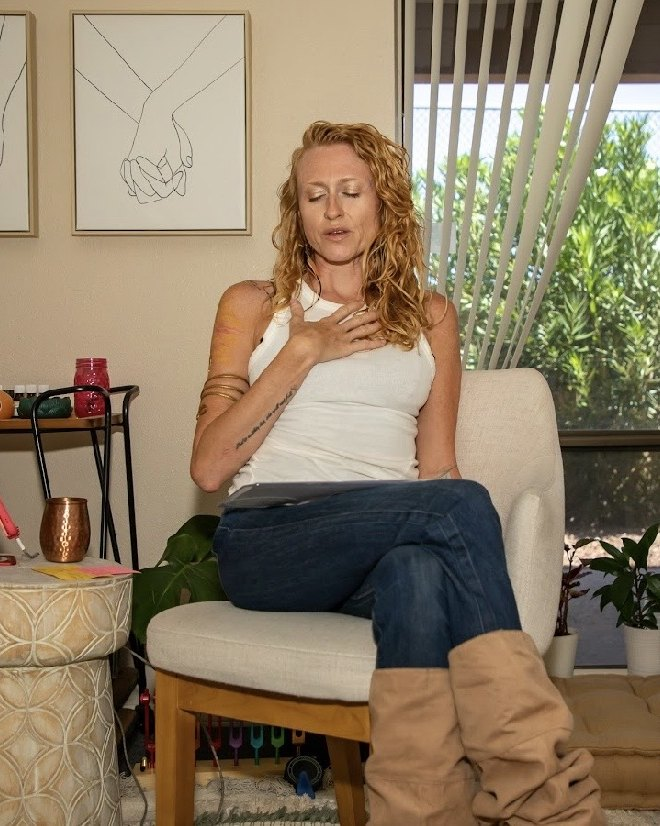

Individual therapy
Trauma, shame, self-doubt, and the patterns that keep repeating with different faces attached.
Holistic Therapist · Gilbert, AZ
Somatic, EMDR-informed, parts-work therapy with Alicia Wright, LCSW. In person a short drive north of Gilbert, or by secure telehealth from your own couch.
For Gilbert
Gilbert clients make up a big part of this practice, and a lot of them arrive having already been to therapy. They can explain their patterns clearly. They know the words for what happened to them. And the thing itself is still sitting there, in the chest and the jaw and the 2 a.m. wake-up. Insight alone rarely finishes the job, because the body kept its own record and nobody ever went and got it. Holistic therapy means we go get it.
How We Work

The office is at 2160 E Brown Rd, Suite 3 in Mesa. From most of Gilbert that is a straight run north on Val Vista, Greenfield, or Higley, or across the 202 if you are coming from the SanTan Village side. Power Ranch, Val Vista Lakes, Morrison Ranch, Agritopia, and the Heritage District all land in the same easy range.
Plenty of Gilbert clients never make that drive. Most of the practice currently meets by secure telehealth, so if the commute is the thing standing between you and starting, it does not have to be a factor. Same therapist, same work, from your house after the kids are down.
Therapy is licensed Arizona-only and available statewide by telehealth. Coaching is available nationwide. If you are somewhere between Gilbert and Queen Creek and not sure which side of a line you fall on, reach out and we will sort it out.
Every one of these has a full page if you want the detail.
Trauma, shame, self-doubt, and the patterns that keep repeating with different faces attached.
The racing mind and the tight chest, worked from the nervous system up instead of managed forever.
Communication, trust, and the same fight in a new outfit. For couples ready to learn a different language.
Burnout, guilt, and the things from your own childhood that surface once you have kids of your own.
Real psychotherapy with the medicine, for what has not moved with talk alone. Not an infusion clinic.
Handled by Kyla, at a lower rate, with Alicia supervising the clinical work behind her.
Which one you see depends on what you are bringing and what you can spend.
Founder & Lead Therapist
Licensed clinical social worker, EMDR trained, certified ketamine-assisted psychotherapy provider, certified tantra practitioner, and kundalini dance teacher. She holds a Master of Social Work plus an MA in Human Services focused on crisis response and trauma. Deepest work sits in trauma, embodiment, couples, and KAP.
Therapist Intern · MSW Candidate
Arizona native, psychology degree from ASU, finishing her Master of Social Work at Capella. Several years with children and adults in substance use and crisis response settings. She works with perinatal mental health, parenthood, identity through life transitions, and teens, at a lower rate and under Alicia's clinical supervision.
Sessions range from $85 to $185 depending on therapist experience and training. See full pricing →

Insurance requires a billable mental health diagnosis in your permanent record before it will pay for a single session, and then it decides how many sessions the diagnosis is worth. Plenty of the work people bring here does not fit that box. Grief, a marriage in trouble, a parent running on empty, someone who wants to go deeper than symptom management.
Staying out-of-network means no diagnosis gets attached to you for billing reasons, and nobody outside the room sets the pace. We provide superbills you can submit to a PPO for possible reimbursement, and HSA and FSA cards work here.
Rates run $85 to $185 depending on who you see. Seeing Kyla is the lower end and it is a real way to access the work with a licensed therapist supervising it.

A free consultation, no intake paperwork, no commitment. You describe what is going on, we tell you how we work, and you decide.
Schedule Free ConsultationNo waitlist, no complicated intake, no hoops.
Fifteen minutes by phone or video. You say what brought you here, we say how we work, and we both decide whether it fits. If it does not, we will point you somewhere that does.
In person at the Mesa office on E Brown Rd, or secure telehealth from Gilbert. You can switch between them week to week. Most of the practice currently meets online.
Weekly, every other week, or longer intensive sessions. Regulation and grounding early, the deeper root work over time. You set the pace.
Investment
Rates vary by therapist based on experience and specialization. Out-of-network with superbills for possible PPO reimbursement. HSA and FSA accepted.
Where
2160 E Brown Rd, Suite 3 in Mesa, north of Gilbert on Val Vista, Greenfield, or Higley. Secure video anywhere in Arizona.
Length
Weekly, every other week, or intensive doubles. Wear whatever you would wear to your best friend's house.
She taught me coping skills, gave me guided steps to consider making in my life, and hope for the future. I can now regulate my emotions versus numbing my feelings, and I have joy again, and a life that I embrace in the present moment while dreaming of an even better future.
Our office is in Mesa at 2160 E Brown Rd, Suite 3, a straight drive north from Gilbert on Val Vista, Greenfield, or Higley. Gilbert clients also have the option of secure telehealth from home.
It means working with the body, the nervous system, and the story underneath, not only the thoughts. In practice that looks like somatic and breath work, parts work, and EMDR alongside talk therapy.
Sessions range from $85 to $185 depending on which therapist you see. We are out-of-network and provide superbills you can submit for possible PPO reimbursement. HSA and FSA are accepted.
No, we are out-of-network. We provide superbills for possible reimbursement, and being cash-pay means no diagnosis is required for billing and no insurance company decides how long you get to work on something.
Yes. Teens and pre-teens work with Kyla Gordon, who sees clients at a lower rate under Alicia's clinical supervision.
Yes. Secure telehealth is available anywhere in Arizona, and most of the practice currently meets that way. Coaching is available nationwide.
Yes. Start with a free 15-minute consultation to see whether it is a fit before you book anything.


The first conversation is free. No commitment, no script, just a chance to see if we're the right fit.